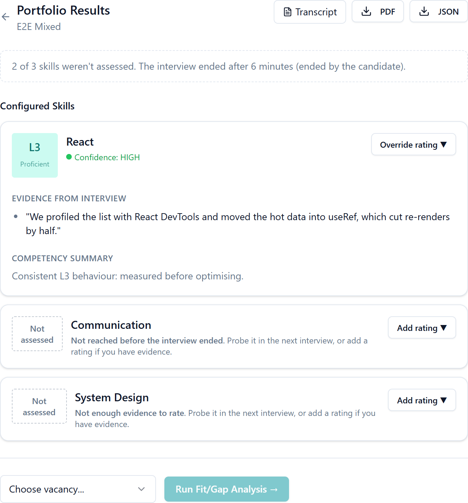
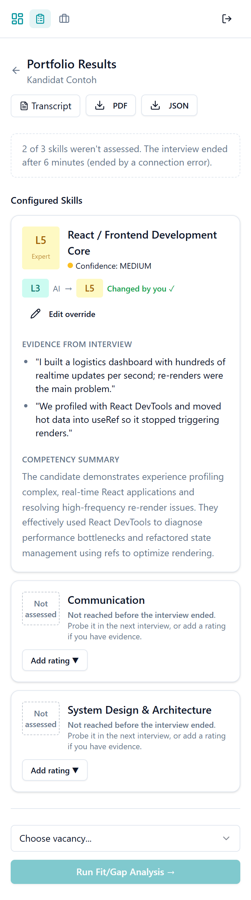
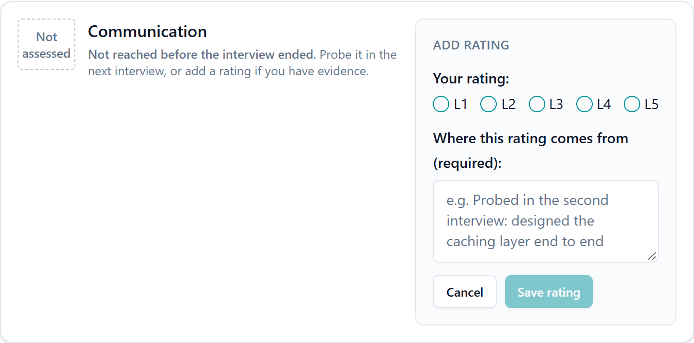
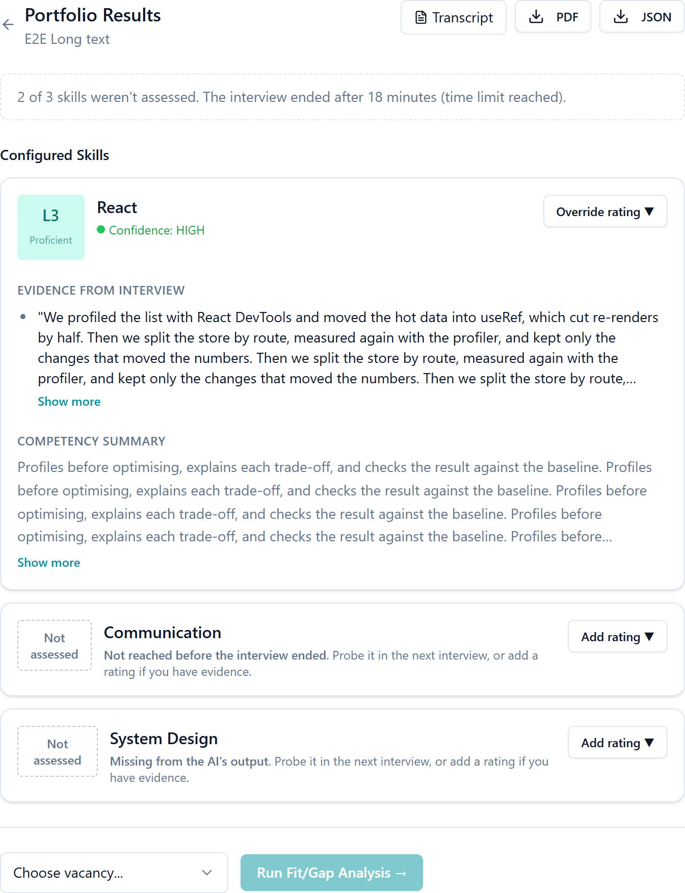
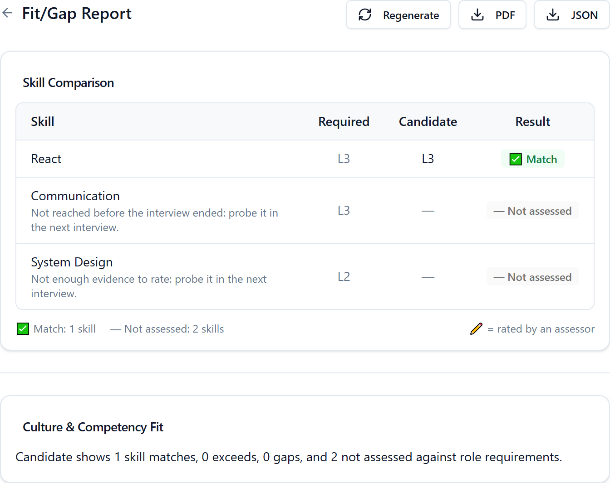
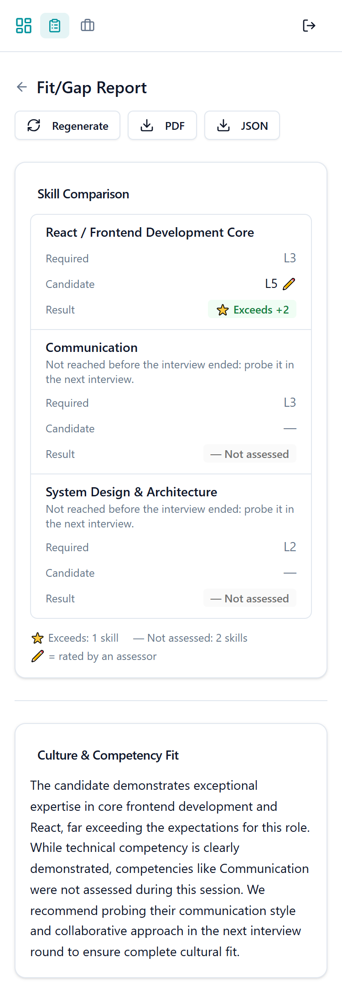
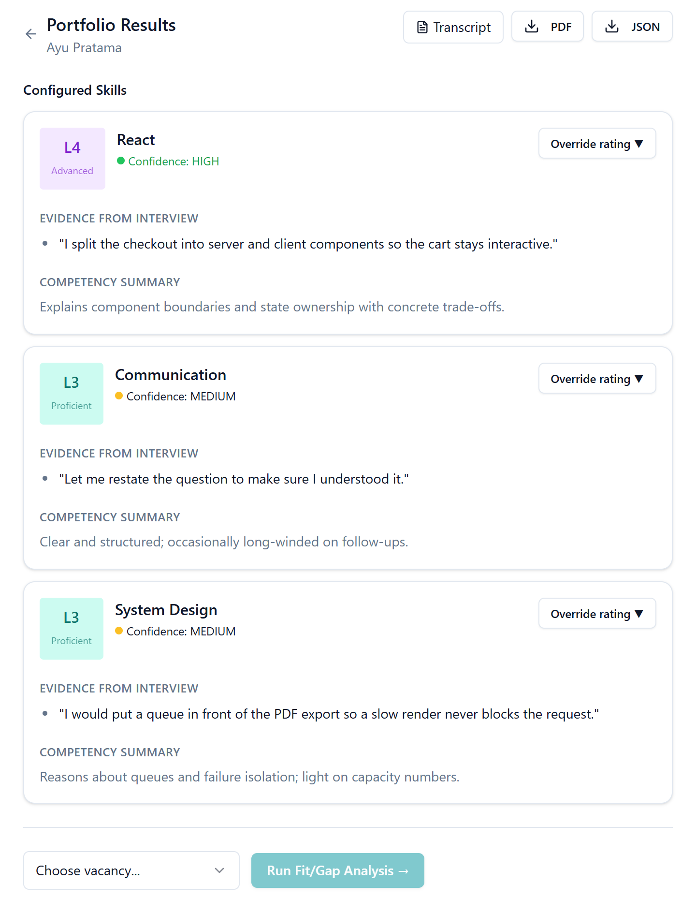
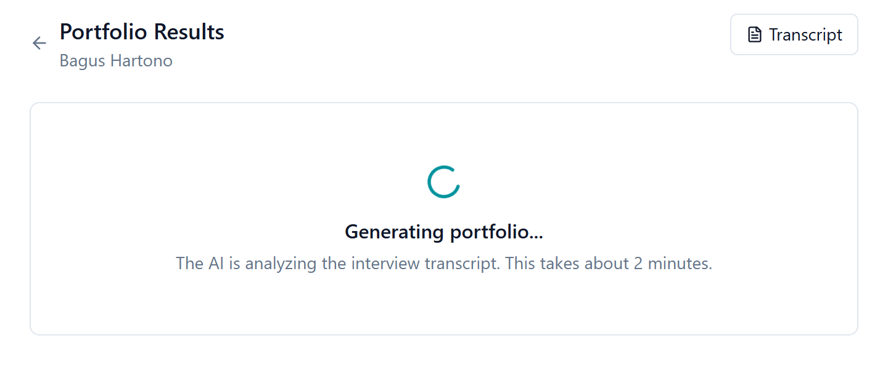
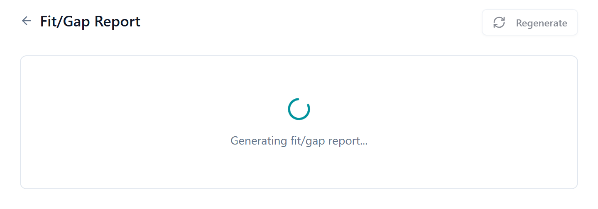
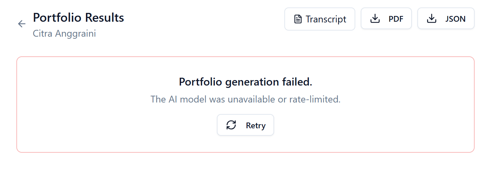

An AI interviewer turns a voice conversation into a level per skill. Today, a skill nobody asked about is stored as L1 and reported as a gap. This report covers why that is the most important thing to fix in this product, how I found it, the options I weighed, and the change I made across the API and the web app.
The product exists to produce one thing: a skill rating an assessor can defend. I found that the pipeline producing that rating fabricates certainty. If an interview ends before a skill is discussed (the candidate's connection drops, or they press "End interview", which the product tells them they can do at any time), that skill is stored as L1, and the fit/gap report calls it a gap.
level.to_i.clamp(1,5) turns null into 1.ai_level NOT NULL 1..5: "not assessed" can't be stored.not_assessed_reason, reversible migration.not_assessed verdict, counted separately.null crashes the page.It is a silent false low: a qualified candidate is rejected for a skill nobody asked about, and nobody re-checks a rejection.
"Errors caused by AI" and "risk of bias" are top reasons Indonesian companies don't use AI in hiring. One visible fabricated rating confirms both.
The pipeline starts from a model response, so every case can be tested with a stubbed model. No live calls, no flaky tests.
| Step | Outcome |
|---|---|
| 1 · Setup | Docker Compose stack; fixed the API crashing on boot; seeded a dev admin. Built the test harness the repo didn't have: 195 API specs and 97 web tests across unit, integration and functional layers, plus CI. Known defects are pinned by tests that fail today. |
| 2 · Domain | Five pillars, from the Indonesian hiring market to UU PDP (Law 27/2022). Found that the Gemini free tier forbids personal data, so production needs a paid tier. |
| 3 · Gap | 2 P0, 14 P1, 17 P2 findings, each reproduced; 8 constraint signals for a Tech Lead. |
| 4 · Strategy | 30 acceptance criteria written before code; three options compared; chose a real "not assessed" state end to end. |
| 5 · Build | Five sub-PRs: tenant scoping, then "not assessed" through storage, generator, fit/gap and both screens. 263 API specs (0 failures) and 126 web tests passing; 118 known-defect or new-AC tests flipped to passing. The seeded fault (the clamp put back) was caught by 13 specs. |
| Test gaps | Covered the pages and API pieces no test touched: 293 API specs and 149 web tests now, web line coverage 50.6% → 68.3%. That found five more defects (P1-14, P2-14 to P2-17), each pinned by a test that fails today. |
| Follow-ups | Two more sub-PRs from the Step 4 list: the request log filters passwords, notes and candidate names (P1-7), and the server queues one fit/gap job per report (P1-6). Then a route-by-route tenant check: no route leaks, and C2 (pick any company at login) pinned. 340 API specs, 0 failures. |
An assessor configures the skills a role needs and what each level (L1–L5) looks like. The candidate opens a
link and talks to an AI interviewer that probes their answers. A coverage map
(not_yet → initiated → partial → covered) steers the next question. After the session, a model
writes a skill portfolio (level, confidence, evidence quotes, summary), and a
fit/gap report compares it with a vacancy. I asked one question from five angles.
Blue: where trust is won or lost. Everyone downstream acts on the portfolio, not on the interview.
The center of gravity is the result review, not the interview. The interview impresses; the portfolio and fit/gap are what someone acts on. Also found: the candidate page is English only even for a Bahasa Indonesia interview, and the interviewer is told never to switch language, though mixing Indonesian and English is normal in Indonesian tech workplaces.
In a Jobstreet by SEEK survey of 1,273 HR practitioners (2024), 80% of Indonesian companies don't use AI in recruitment. Top reasons: no human touch (44%), cost (40%), risk of bias (38%), AI errors (27%). The product sells into skepticism; its weakest point is exactly the one buyers fear.
Give a hiring team a level per skill they can defend, without spending an engineer's hour on every first-round candidate. The two errors aren't symmetric: a false high costs one more interview; a false low is silent. The output must stay decision support, never auto-reject.
The assessor needs to tell measured-low from never-measured. The recruiter needs to see what's waiting. The hiring manager needs real gaps vs unknowns, and what to probe next. Today one admin role does all three jobs, and the override only works if the assessor knows when to doubt the AI.
The candidate can't see the output and usually can't refuse without losing the opportunity. The page says "You can end anytime", and ending early silently turns every skill not yet reached into L1. They're penalized for using an option the product offered, and never told. In Indonesia, a dropped mobile connection does the same.
| UU PDP | Requirement (paraphrased) | Today |
|---|---|---|
| Art. 20–22 | Lawful basis; recorded consent; purpose, data types, retention and rights stated before processing. | No notice or consent before the mic opens. "Has been recorded" appears only after. |
| Art. 10 | Right to object to decisions based solely on automated processing, including profiling. | A skill rating is profiling. Human review is possible but not guaranteed or shown. |
| Art. 7, 8, 44 | Access, erasure, destruction at the end of retention. | No retention period and no erasure path. |
| Art. 34, 56 | Impact assessment for high-risk processing; safeguards for cross-border transfer. | Audio and transcripts go to Google's API. Escalated. |
The model tier is a legal question. The Gemini API terms say the free tier may use inputs to improve products, human reviewers may read them, and users must not submit personal information. A real candidate's interview is personal information. Production must run on a paid tier, and that should be a deploy-time check, not a convention.
Where the five pillars point: all of them land on the step that turns an interview into a rating. That became the Step 4 focus. Candidate notice and consent is next in line.
How I checked. I traced each node of the product spec to the code, ran the stack, called the API with tokens from two different organizations, read the Sidekiq and Rails logs, walked the screens at desktop and 375px, and reproduced the result pipeline against the real services with a stubbed model response. Every finding below was reproduced; most are now pinned by a test that fails until it's fixed.
Reproduction. Senior Frontend Engineer, three skills. The
candidate's connection drops at minute 6, after only React was discussed. The model honestly answers
"level": null for the other two.
Stored: React L3 · Communication L1 (probes: 0) · System Design L1 (probes: 0)
Fit/gap: Communication gap · System Design gap · "1 skill matches, 0 exceeds, and 2 gaps".
How a rating nobody measured becomes a rejection. Red: the defects (P0-1, P1-1, P1-3).
Type: missing specification (never defined) vs defective implementation (defined, but broken). SEAM marks a break between the API's data and the web's presentation.
| Finding | Impact | Type | |
|---|---|---|---|
| P0-1 | Unassessed skills are stored as L1: prompt, clamp, NOT NULL column and the web fallback. SEAM | A candidate whose interview ended early gets the lowest level for skills nobody asked about. | Spec + defect |
| P0-2 | Cross-tenant read and write of portfolios, skills and fit/gap reports. | An admin at Company B exported Company A's candidate evidence and set a rating to L5 (HTTP 201). | Defect |
| P1-1 | Fit/gap treats fabricated and low-confidence levels as real. | "Gap −2" for a skill never discussed. | Spec |
| P1-2 | API sends expected_level, web reads required_level; the override marker never shows. SEAM | The report's core table has a blank "Required" column. | Defect |
| P1-3 | Skills the model leaves out disappear. | 1 skill shown for a 3-skill assessment, with no sign anything is missing. | Defect |
| P1-4 | Portfolio writes aren't atomic; regenerating deletes overrides. | Half-written portfolios; a retry erases the assessor's judgement. | Defect |
| P1-5 | Evidence quotes aren't checked against the transcript. | An invented quote is shown as "Evidence from interview". | Spec |
| P1-6 | Duplicate fit/gap jobs race. | 3 requests → 3 jobs, 2 crashed on a unique index. | Defect |
| P1-7 | Passwords and assessor notes in the request log. | Secrets and personal data in plain text. | Defect |
| P1-8/9 | Assessment list loads page 1 only; every ended session reads "completed". SEAM | Assessments past the 20th are unreachable; early-ended interviews look complete. | Defect / spec |
| P1-10 | Anyone with the invite link can end the interview as "all skills covered", no auth. | A leaked link ends a never-started session and stores a "complete" portfolio with 0 skills. | Defect |
| P1-11 | A broken invite link says "The interview has been recorded." | A candidate who never interviewed waits for a reply that never comes. | Defect |
| P1-12 | The hardware check depends on third-party hosts. Without a CSP it calls them before any notice; under the repo's own production CSP they're blocked and the check can never pass. | Either the candidate's IP leaves before consent, or Start stays disabled for every candidate. P0 if production serves that CSP (C8). | Defect |
| P1-13 | PDF export crashes on any overridden portfolio (an → the font can't encode). | It fails on exactly the portfolios a human reviewed most closely. | Defect |
| P1-14 | Removing a skill on the assessment or vacancy edit form doesn't remove it: the web leaves it out instead of sending _destroy, and the API keeps it. SEAM | The interviewer still asks about a deleted skill, and on a vacancy it keeps counting in every fit/gap report. | Defect |
P2 (17): failure states are dead ends (endless spinner, blank page); retries never
fire because the HTTP client only retries idempotent methods and every model call is a POST; no candidate
notice or consent; a null level would crash the portfolio page, so the API fix must ship with the web
fix; invite links never expire; list cards aren't keyboard reachable; the live monitor gives up silently.
Found later, while filling test gaps: a level label on the second skill sets the first (duplicate ids, P2-14); the
skill picker drops the taxonomy id, so fit/gap can only match by label (P2-15); required fields and some saves fail
with no message (P2-16); the edit and invite pages hide a load failure behind an empty form (P2-17).
P3: copy, 375px header, payload size. Full list: assessment/03-problem-and-gap.md.
| C2 | Auth trusts JWT claims without a user lookup. Any token signed with the secret shared with rakamin-api is accepted, so tenant isolation rests entirely on model scoping, which is what failed in P0-2. Worse, login
itself takes the company from an X-Tenant-Scheme header and users belong to no company, so any admin
can sign in to any company (pinned in sub-PR 8; since sub-PR 9 production names one company per deployment). |
| C3 | Shared database with another service. Migrations must be coordinated and reversible. |
| C4 | No retention or erasure policy. A product and legal decision, not an engineering default. |
| C8 | The production web config can't be verified from the repo. Under the CSP in vercel.json, no candidate can start (P1-12). I'd ask first whether production serves it; if so, it outranks everything else. |
| C1, C6, C7 | Model IDs were retired and the free tier forbids personal data; the candidate is whoever holds the link; CORS allows any origin. |
A skill the interview never reached, or that the model couldn't rate, is stored with no level and a reason. It reaches fit/gap as not assessed, not as a gap. The assessor sees a neutral state that says why, and can add a rating. Along the way the write becomes atomic, keeps overrides, accounts for every configured skill, and drops quotes that aren't in the transcript.
| A · Hide it in the UI | B · Real state, end to end | C · B + verdicts + backfill | |
|---|---|---|---|
| Product impact | Low. The screen looks right, but fit/gap, PDF and export still say L1. The lie moves to what leaves the building. | High. Screen, fit/gap, PDF and export tell the same truth. | Highest on paper, but rewrites results people may have acted on. |
| Cost | Small, web only | Medium: 1 migration, generator, engine, 2 serializers, 2 screens | Large |
| Maintainability | Poor. Inferred, fuzzily, in every reader. | Good. One field, one place decides it. | Needs thresholds I'd be guessing. |
| Reversibility | Trivial | Good. Relaxes constraints, adds nullable columns; rollback stops clearly if NULLs exist. | Weak. A rewrite of ratings can't be undone without a snapshot. |
| Failure mode | A real L1 gets hidden. | If coverage is wrong, a discussed skill shows "not assessed": the safe direction, visible and fixable. | A wrong threshold silently changes verdicts. |
Decision: B. The smallest change that makes every output honest. C's extras need product decisions (verdict thresholds; what to do with past ratings), so they're follow-ups. Past ratings are not rewritten; a read-only task reports how many are affected. The session's end reason isn't trusted either (anyone with the link can end it as "all covered", P1-10), so "assessed" is decided by the coverage map and the model output only.
null or junk levels
(0, 6, "N/A", "high", []) are never clamped;
the coverage map overrules a level for a skill never probed; every configured skill gets exactly one row;
unverifiable quotes are dropped and confidence lowered; any failure leaves the previous portfolio intact;
overrides survive regeneration; model errors are stored as a category, never raw text; a very long
quote or summary (say 20,000 characters) is capped at 500 or 2,000 instead of failing the write.
Not assessed is its own verdict
with no delta; an override on it counts and is flagged; the payload carries both expected_level and
required_level during the transition; the fallback narrative counts unknowns; the migration
changes no existing row and its rollback refuses to invent levels; adding a rating to an unassessed skill
requires a note.
A "Not assessed" badge with the reason in plain language
and "Add rating"; null is never shown as L1; a summary line ("2 of 3 skills weren't assessed");
error states with Retry instead of a spinner or a blank page; long text collapsed; stacked rows at 375px;
not conveyed by color alone; reachable by keyboard.
Umbrella PR + sub-PRs: (1) tenant scoping, (2) web tolerates a missing level, which must land before (3) data model + generator, (4) fit/gap engine + payload, (5) portfolio and fit/gap screens. Each sub-PR flips its pinned known-defect tests to passing.
One place decides, the generator, and every reader (fit/gap, API, screens, PDF) only displays the result. The coverage map is checked first: a rating with zero probes has no evidence by definition, whatever the model says. The model is called before the transaction opens, so a slow call never holds the database.
Unverifiable quotes are dropped one by one. Any failure rolls back and leaves the previous portfolio intact.
2 lands before 3 because a null level crashes the portfolio page today (P2-11). Each sub-PR is reviewable on its own and flips its pinned known-defect tests to passing.
The sub-PRs are in the public fork, each targeting the one before it so its diff is only its own change: mwyzer/ai-interview-platform-fs#1 tenant scoping, #2 web null level, #3 generator and migration, #4 fit/gap, #5 screens.
A skill nobody asked about is now stored, scored and shown as not assessed, and why, never as L1. Five sub-PRs, each with its tests written first and checked to fail on their assertion.
| # | Sub-PR (branch) | What it changes | Commits |
|---|---|---|---|
| 1 | fix/tenant-scoping | Every portfolio, skill and fit/gap lookup is scoped to the caller's tenant (P0-2), including two fit/gap write routes Step 3 hadn't pinned. No migration. | d7e58ac ecd3124 |
| 2 | fix/web-null-level | The web reads a missing level as "not assessed" instead of L1 or a crash (AC-23, P2-11). Ships before the API can send one. | 8292c0a 79328eb 9907398 |
| 3 | feat/not-assessed-generator | Reversible migration; the generator stores "not assessed" with a reason, writes atomically and keeps overrides, verifies quotes (P0-1, P1-3..P1-5). | 4a4f5ca 69aebe4 8cb0a9d 841fb35 5192358 |
| 4 | feat/fitgap-not-assessed | Fit/gap reports an unassessed skill as an unknown, not a gap, and the narrative says so (P1-1). | bb4b797 dedee56 054c6b9 |
| 5 | feat/not-assessed-screens | Portfolio and fit/gap screens: the reason, a summary line, rating with a required source, error and retry states, long text, 375px (AC-20, AC-22, AC-24..AC-30). | 5e30533 342adec c40c78d 8e0a650 |
| Two follow-ups from the Step 4 list, stacked on top of the five: | |||
| 6 | fix/filter-log-params | Passwords, emails, tokens, assessor notes and
candidate names are [FILTERED] in the request log (P1-7). |
1305216 4f844a1 |
| 7 | fix/fitgap-single-job | Reversible migration; the report row is claimed before the job is queued, so one fit/gap job runs per report, and a claim whose job died is taken over (P1-6). | b5ac8bb |
| 8 | test/tenant-routes | Every API route, called by another company with this company's IDs: 404 and nothing changed. A new route without a case fails the suite. No leaks found; C2 pinned as pending. | d19c866 |
| 9 | fix/production-guards | Production refuses to boot on the free model tier or without a server-set login company, and login can't name another company (C2 mitigation). Found on the way: production didn't boot at all (an Active Job setting the app never loads), now fixed and tested by booting it. | c59b784 6a855f2 5220a2e |
Same synthetic interview (React discussed, two skills never reached), run through the real model on the dev stack.
| Communication (role needs L3) | System Design (role needs L2) | |
|---|---|---|
| Before | Stored L1; fit/gap: gap | Stored L1; fit/gap: gap |
| Model's answer now | null | null |
| After | Not assessed, not_reached; fit/gap: not assessed | Not assessed, not_reached; fit/gap: not assessed |
| Narrative | Before: "1 skill matches, 0 exceeds, and 2 gaps". After: the unassessed skills "remain unassessed… the upcoming round should focus specifically on probing these open areas." | |
tsc clean.| Failure path | What happens now | Pinned by |
|---|---|---|
| Model timeout, 503, rate limit | Portfolio marked failed with a category and a fixed, safe
message; the previous skills stay as they were; Retry. Seen for real: a 503 during the live run. | Generator spec, API journey, web page |
| Reply isn't JSON, or a level is junk | 0, 6, -1, 2.5, "", "N/A", "high", "L3.5" → not assessed
(insufficient_evidence); unreadable reply → model_invalid_response. The reply is never logged. | AC-3, AC-4, privacy specs |
| Partial write | All rows in one transaction, updated in place by skill, so overrides survive a regenerate (P1-4). | Generator spec ×2 |
| Duplicate fit/gap jobs | The page requests generation once per visit (P1-6, web), and the server queues one job per report: the first request claims the row (sub-PR 7). | Fit/gap page; fit/gap request specs |
| Quote not in the transcript | Dropped; a rating left with none drops to low confidence (P1-5). | Generator spec |
| Load fails, or generation hangs | Alert with Try again instead of a blank page (P2-1); fit/gap gives up waiting after two minutes. | Portfolio and fit/gap pages |
| Long text | Long quotes and summaries collapse behind Show more (aria-expanded); unbroken strings wrap. | ExpandableText tests |
After the five sub-PRs, a search for source files no test mentions still listed whole pages (creating, editing and inviting on an assessment; vacancies; the transcript) and API pieces (the skill library, the tenant resolver, the coverage analyzer worker). Coverage was measured once by hand, without adding gems or packages.
| API | Web | |
|---|---|---|
| Added | 30 examples: skill library model and endpoints; tenant resolver order (JWT, then header, then Referer); the coverage analyzer worker (session-scoped updates, discovered skills capped at ten, auto-advancing stale partials, failures) | 32 tests: LevelRadio, SkillPicker, and
functional tests for the assessment form, invites, vacancies and transcript |
| Line coverage | 69.7% → 71.6% | 50.6% → 68.3% |
| Checked against a fault | Three faults put into the worker and middleware were each caught, then reverted. | |
| What's left | Mostly the audio path, which needs a live model. | |
They found five defects, each now an it.fails marker that fails on its own assertion: P1-14, and P2-14
to P2-17 (Step 3). The most serious, P1-14, is a seam bug: an API spec shows _destroy works, so the fix
is on the web side.
Migration (AC-17, AC-18). It only relaxes NOT NULL and adds nullable columns, plus three
check constraints that keep "not assessed" whole (no level ⇔ a reason; no confidence without a level). On the dev
database a digest of every rating and override was identical before, after db:rollback and after
db:migrate. Rollback refuses, with counts, while any row has no level, rather than invent one.
On scratch/seeded-fault-clamp, commit 27f49f3 put the original bug back:
value.to_i.clamp(1, 5) in the level parser. 13 specs failed, each on its assertion
(had attributes {:ai_level => 1}): AC-1, AC-3
("L3", "l3"), AC-4 (eight junk values), AC-12 and the discovered-skill case. Commit
5b34128 reverts it; both stay in the history.
The older P0-1 specs did not fail. Their unrated skill was also never probed, so the coverage rule caught it before the parser ran. That is two independent layers, and it's why the new specs use a skill that was probed: a test should be able to see the layer it's named after.
Dev stack, synthetic candidates. React's L5 on the first candidate is an override left from the Step 3 cross-tenant reproduction.










I used an AI assistant throughout. Every claim it made about the system was checked against something observable: a log, a real request, a failure message. Eleven moments are logged in the work log; these are the ones that mattered most.
pending (a known
defect), and pending accepts any failure, so it would have shown as proof of the
cross-tenant leak while actually failing on Factory not registered. Caught by reviewing
the code before the run, then reading every pending spec's failure message instead of the count.
Rule now: every known-defect test is run as a normal test and must fail on its assertion.NODE_ENV=production. Caught by reading the failure output, not the
summary line. Fixed by pinning NODE_ENV=test.{ override_level: 2 }; the client actually sends { override: { … } }. Against
the old code the test failed earlier, on the null crash, so it looked like a correctly pinned defect.
Caught by running the suite after the fix: it was the only test still failing. Fixed in its own
commit, with the reason. Rule now: a test that fails on a crash hasn't had its assertions checked yet.any_instance blocks receive the record first, and built a stub on it. The
stub worked by luck. Caught by a second stub built on the same belief, which recorded nil for
every call; a throwaway probe spec settled it. Fixed: both stubs and the comment.package.json, the assistant ran npm i --no-save. The shell had
NODE_ENV=production, so npm removed every devDependency, Vitest included. Caught by the
coverage run failing on a missing module. Fixed: npm ci --include=dev, with
git status clean. Rule now: check the environment before installing, and run a test straight after.I don't decide the law. My job is to make the product safe by default, and to make sure that whatever legal decides can be enforced by the system instead of by convention. So the roadmap splits into work that needs no decision (stop the leaks now) and mechanisms whose settings legal fills in (retention, consent wording).
| Data | Lives in | Goes to | Retention today |
|---|---|---|---|
| Voice audio | 60-second memory buffer on the API | Google Gemini Live, outside Indonesia | Not stored by us |
| Transcript | transcript_turns | Gemini, for coverage analysis and the portfolio | None set |
| Ratings, quotes, summaries (profiling) | portfolio_skills | Assessors, hiring managers, the PDF export | None set |
| Candidate name (optional) | sessions | Portfolio, PDF export | None set |
| Assessor notes | assessor_overrides | The request log, in plain text (P1-7; filtered since sub-PR 6) | None set |
| IP and device details | Not stored | Five third-party hosts during the hardware check, before any notice, where no CSP blocks them (P1-12) | Their policies |
As found in Step 3. Red, dashed: flows that shouldn't exist; two are now closed, cross-tenant access in sub-PR 1 (P0-2) and the request log in sub-PR 6 (P1-7). Amber: data that leaves our control and needs a documented basis.
| Phase | What I'd build | UU PDP | Needs a decision? |
|---|---|---|---|
| 0 · Stop the leaks | Tenant scoping (P0-2, sub-PR 1 of this change). Filter passwords and notes from logs (P1-7, sub-PR 6). All three speed tests against our own API (P1-12): this removes the leak and the production block, so it goes first. A deploy check that refuses the free model tier in production. CORS limited to the web app's origin. | Security of processing; Art. 5, 21 | No. Small PRs, ship now |
| 1 · Notice and recorded consent | A notice before the mic opens, in the interview's language: AI interview and AI rating, purpose, who sees it, Google processes the audio, retention, how to ask for deletion. Consent stored as a record (session, notice version, language, time), and a session can't start without one. Declining leads to "contact the recruiter", with no penalty. Fix the broken-link message (P1-11). | Art. 5, 20–22 | Wording only. The mechanism doesn't wait: the text is versioned |
| 2 · A human stays accountable | No auto-reject, ever. Record who reviewed a portfolio and when, and show it. A channel for the candidate to object. Ratings that say "not assessed" instead of a fabricated L1 (this change). | Art. 10 | Who handles objections |
| 3 · Retention, access, erasure | Retention configurable per tenant, enforced by a scheduled purge. Erase one candidate's data: transcript, portfolio, overrides, export. Export it for an access request. Every deletion in an audit log. | Art. 7, 8, 44 | Yes: the retention period |
| 4 · Incident readiness | An audit log of access to candidate data, an alert on cross-tenant access attempts, and a runbook. Without a log, a breach can't be detected, let alone reported in time. | Art. 46 (3×24 hours) | Who notifies |
Data minimization in the consent record. It stores the session, the notice version, the language and the time. It doesn't store the IP address or a device fingerprint, because proving consent doesn't need them.
Each one comes with my recommendation, so the decision is a yes or a correction rather than a blank
page. They're proposals for legal and product to test, not legal advice. Everything that doesn't depend on the
answer is designed in 07-next-steps.md, to build either way.
| Decision | Why it isn't an engineering call | My recommendation | What I bring |
|---|---|---|---|
| Controller vs processor | It decides who owns the notice, the objection channel and the erasure flow. | The client company is the controller (it decides why candidates are assessed); the platform processes on its instruction, under a data processing agreement. | The data map above |
| Lawful basis: consent or legitimate interest | It changes whether declining must be possible without consequence. | Whichever basis legal picks, let a candidate decline the AI interview and be assessed by a person instead: in hiring, consent without a real alternative isn't freely given. | Consent design that works for both (next steps 1.2) |
| Retention period | Re-review and disputes vs exposure. | A starting point to test: transcript and portfolio kept for six months after the hiring decision, set per company; never longer than the notice says. | Purge, erasure and export design (next steps 3.1) |
| Impact assessment (Art. 34), cross-border basis (Art. 56) | Automated profiling with significant effects is high risk; the transfer needs safeguards. | Run the impact assessment before the first real candidate. Production only on the paid tier, now enforced at boot (sub-PR 9). | Data flow, Step 3 risk list, model tier terms |
| Users and their company (C2) | The user data lives next to rakamin-api's, in a shared database. |
A membership table in this service's schema, unless rakamin-api already has one to reuse. Until
then, one company per deployment, set on the server (sub-PR 9). | The pinned C2 spec; an ADR with both options |
| Who sees what (roles) | It shapes each user's job. | Recruiter: invites and status. Hiring manager: portfolio, evidence, fit/gap, ratings. Admin: configuration. Taken from the Step 2 user research. | Route × role matrix (next steps 2.1) |
| Nice-to-have skills, capped verdict | They change what a result means. | Every skill stays required by default, so nothing changes until a vacancy opts in. Show an "incomplete" verdict beside the narrative behind a flag, and decide on real reports. | The Step 3 reproduction as the example |
| Who answers objections and incidents | An organisational role, which follows from the controller decision. | Objections go to a named recruiter lead per company, with a response time product sets. Incidents go from the on-call engineer to the controller's privacy contact, within hours. | Runbook outline (next steps 3.2) |
| Should candidates see their own portfolio? | Good for trust and access, but it changes the product. | Yes, on request through the export first; self-service later, once ratings are reviewed. | Effort estimate; the export |
To close before the product sees a real candidate's data. Owners are roles; who fills each one depends on the controller decision above. Status is as of this branch.
| UU PDP | Risk | Technical control | Owner | Prio | Status |
|---|---|---|---|---|---|
| Art. 20–22 | Processing with no notice and no lawful basis. | Versioned notice before the mic opens; a consent record; no session without one. | Engineering; wording: legal | P0 | Not started (phase 1). |
| Security of processing | Another company's admin reads or changes data; secrets in logs. | Tenant scoping; request-log filtering; the free model tier refused in production. | Engineering | P0 | Partly. Scoping (sub-PR 1), every route pinned (sub-PR 8), log filter (sub-PR 6), free tier refused at boot and login pinned to one company per deployment (sub-PR 9). Open: users linked to a company (C2). |
| Art. 56 | Audio and transcripts leave Indonesia with no documented basis. | A paid tier with data terms; a recorded transfer basis. | Legal; engineering for the tier check | P0 | Paid tier enforced at boot (sub-PR 9). Transfer basis escalated. |
| Art. 10 | A rating acts as a decision nobody reviewed. | No auto-reject; reviewer, time and reason recorded; an objection channel. | Product and engineering | P1 | Partly. Overrides record who and when. |
| Art. 7, 8, 44 | Data kept forever, with no way to erase or export it. | Retention per tenant with a scheduled purge; erasure and export per candidate; deletions in an audit log. | Engineering; the period: legal | P1 | Not started (phase 3). |
| Art. 34 | High-risk profiling with no impact assessment. | The data map and the Step 3 risk list as inputs. | Legal | P1 | Escalated. |
| Art. 46 | A breach found late, or never. | Access audit log, cross-tenant alert, runbook. | Engineering on call; notice: the controller | P1 | Not started (phase 4). |
A spec walks the route table:
another company's admin calls every route with this company's IDs in the URL and the body, and gets 404 with
nothing changed; a new route without a case fails the suite. No route leaked, and two planted faults were
caught. Still open (C2): login lets the caller name the company in a header, and users belong
to no company, so any admin can sign in to company A. Sub-PR 9 contains it: production names one company per
deployment, and login refuses any other. The real fix, a user-to-company link in a database shared with
rakamin-api, is a Tech Lead decision.
Today an override records who and when, asks for a reason only when the AI gave no rating, and keeps only the latest change per skill. I'd require a reason for every change, keep the full history, record "reviewed by, on" even when nothing changed, and add the candidate's objection channel (phase 2). The AI supports the assessor; it never decides alone.
The tests check states and quotes, not whether a level is right. I'd build a set of answers in Indonesian, English, a mix of both, and short but relevant, rated by people, using synthetic or consented data only. Measure agreement between AI and human ratings, the share of invalid quotes, and the gap between languages. It calls the real model, so it runs on a schedule, not in CI. Targets come after the baseline is measured, not before.
Phase 4, made concrete: the on-call engineer gets the alert, escalates to the controller's privacy contact within hours, and the 3×24-hour notice clock starts at discovery. Logs keep IDs and event types, never passwords, full transcripts or personal data. Sub-PR 6 filters the request log; a test should also fail if transcript text ever reaches it.
Articles refer to Law 27/2022 and are paraphrased; I'm not a lawyer, and the mapping should be checked by legal counsel.
The brief has no live Q&A, so these are stated rather than assumed silently. Each one picks the direction that is safer for the candidate and clearer for the assessor: show uncertainty, keep evidence that can be checked, and never hide thin data behind a level. The "Today" column separates what this change built from what is still a call I'd make.
| Assumption or question | What I did, and why |
|---|---|
| The coverage map may overrule the model for a skill never probed. | Assumed yes: a rating with zero probes has no evidence by definition. If the analyzer lags one turn, a skill discussed at the very end may show "not assessed", which is the safe direction. Worth confirming with the Tech Lead. |
| Past ratings stay as they are. | People may have acted on them. A read-only task reports how many L1s have no probes behind them, so the team can decide. |
Keeping required_level beside expected_level for one release. | Only this web app and the PDF consume the payload today. |
| Quotes must be verbatim to count as evidence. | Normalized (case, whitespace, quote marks) but exact. A paraphrase is dropped and lowers confidence; it never erases a rating. |
| Assumption or question | My call, and why | Today |
|---|---|---|
| A short answer can still be evidence. | Length isn't competence. A one-sentence answer supports a low-to-mid level unless a follow-up probes it; thin evidence shows as low confidence, not a fail. | Partly. A rating left with no verified quote drops to low confidence (P1-5). No rule on answer length. |
| A transcription error must never change a verdict silently. | When transcript quality is doubtful (accent, noise, a weak signal), the report says so and asks the assessor to check the quotes before relying on the rating. The rating stays. | Not yet. We keep no quality signal from the speech pipeline. For now the check is that every quote must appear verbatim in the transcript. |
| Re-assessment on request, without a new interview. | Not in this release. Transcript, ratings and quotes are kept, so a person can review. An automatic re-run waits on cost, consistency and an audit trail. | Assessors can regenerate a portfolio, and overrides survive it. The candidate has no way to ask. |
| No rating of personality, voice or appearance. | Only the skills in the rubric are rated. Demographics, emotion, accent and physical traits are never inputs: it keeps the rating job-related and cuts a source of bias. | Holds by construction. The portfolio is generated from transcript text and the rubric only; no audio reaches it, and there is no video. |
| A skill the role doesn't require can't lower the outcome. | Only required skills drive fit/gap. Nice-to-have skills are shown apart, so a junior doesn't look weak for lacking advanced experience. | Not yet. Every configured skill has a required level; there is no nice-to-have tier. |
| One strong answer can't cover a skill never asked about. | The overall result can't be better than the evidence on required skills. A core skill not assessed makes it incomplete, not fit. | Per skill, built: not assessed is its own verdict (sub-PR 4). The overall narrative is still the model's; capping it is next in line. |
| Response time isn't a competence signal. | Thinking time, answering in a second language or a slow connection is never penalized. | Holds. Duration is stored on the session and never sent to the rating. |
| A leading question still counts as a probe, flagged. | If the interviewer nearly gave the answer, confidence drops: the evidence may reflect help rather than the candidate's own ability. | Not yet. Coverage counts probes, not how leading they were. |
| Assumption or question | My call, and why | Today |
|---|---|---|
| Consent to AI analysis is its own choice, not folded into general terms. | Separate choices for audio processing by Google, AI rating and retention, recorded with the time, notice version and session. | Not yet. Privacy phase 1. |
| Declining AI analysis doesn't end the candidacy. | Otherwise consent isn't freely given. The candidate gets a human-assessed route instead. | Phase 1 sends a decline to "contact the recruiter", with no penalty. A full alternative route depends on the lawful basis (escalated). |
| Raw audio goes before the report does. | Data minimization and storage limitation: keep what a decision needs, for as long as it needs it. | Already true for audio: it is never stored, only buffered in memory. Transcript and report wait for a retention period (phase 3). |
| No training on candidate data without a separate permission. | Training or product improvement needs its own opt-in, anonymized data or synthetic data. Anything else reuses data beyond the purpose of hiring. | We train nothing. The model tier's terms matter, hence the phase 0 check that refuses the free tier in production. |
| Erasure covers every derived copy. | Erasing a candidate removes or anonymizes the transcript, ratings, overrides, fit/gap and anything traceable to them. | Not yet. Phase 3. A PDF already exported can't be recalled; the notice has to say so. |
| The platform processes on the client's instruction (processor, not controller). | Provisional. It decides who answers candidate requests, owns the notice and handles a breach. | Escalated to legal. |
| Access follows the role. | Recruiters read reports, hiring managers the summary and evidence, admins the configuration; engineers don't open production transcripts by default. | Not yet. One admin role does all of it. Tenant scoping (sub-PR 1) is the first boundary. |
| Assumption or question | My call, and why | Today |
|---|---|---|
| Mixing Indonesian and English is the norm, not the exception. | The transcript and the model handle a switch inside one answer. Quotes are shown as said, so the assessor can check the original meaning. | Partly. Quotes are verbatim in any language, but the interviewer is still told never to switch language (Step 2). |
| Candidates use low-cost phones on mobile networks. | A light page, automatic reconnect and a connection indicator. A technical failure must never read as weak communication. | Partly. A dropped connection now gives "not assessed, not reached", never L1 (this change). The interview page reconnects three times (1, 2, 4 s) and shows the connection state; the model's side resumes where it left off. A drop longer than about seven seconds still ends the interview. |
| A non-technical assessor reads the report in minutes. | The first screen holds the verdict, the required skills, confidence and the one to three strongest quotes; detail goes below. | Partly. The summary line ("2 of 3 skills weren't assessed") and plain-language reasons are there. |
| Many applicants, few roles each. | Optimize reading one candidate's report, not an analytics dashboard. Aggregates come once individual review is stable. | The scope of this change. |
| "L1" and "L3" mean nothing outside engineering. | Plain labels (not yet seen, basic, capable, strong), with the role's definition on hover or tap. | Not yet. Levels show as L1–L5 with the role's rubric. |
| The recruiter may decide on information outside the system. | The AI recommends; the decision and its reason belong to a person. Hiring is never decided by the AI. | Adding a rating the AI didn't give requires a note. Recording who reviewed, and when, is phase 2. |